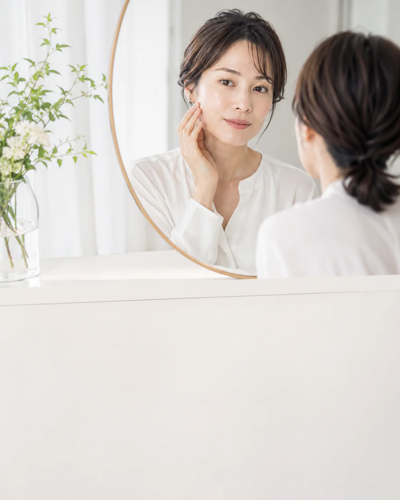
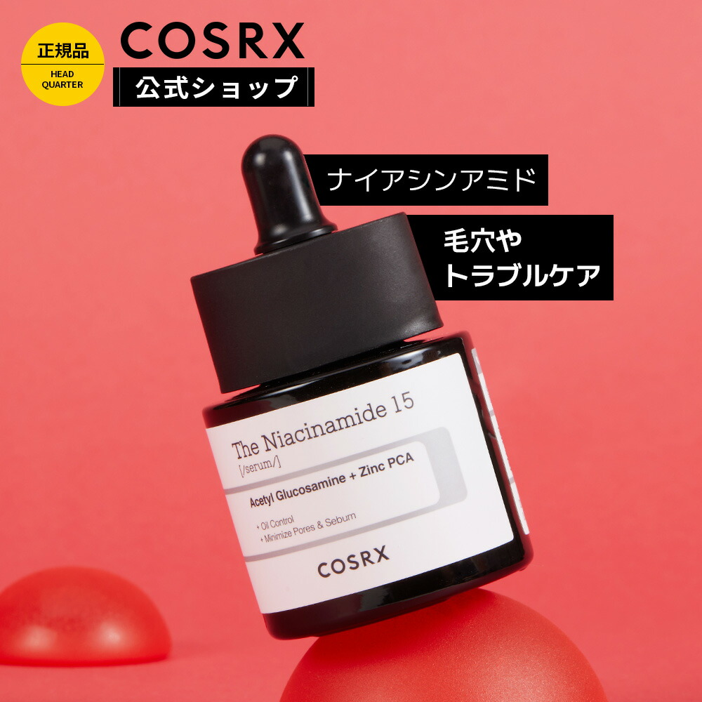
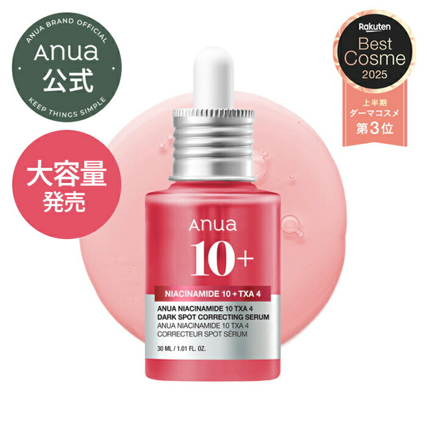
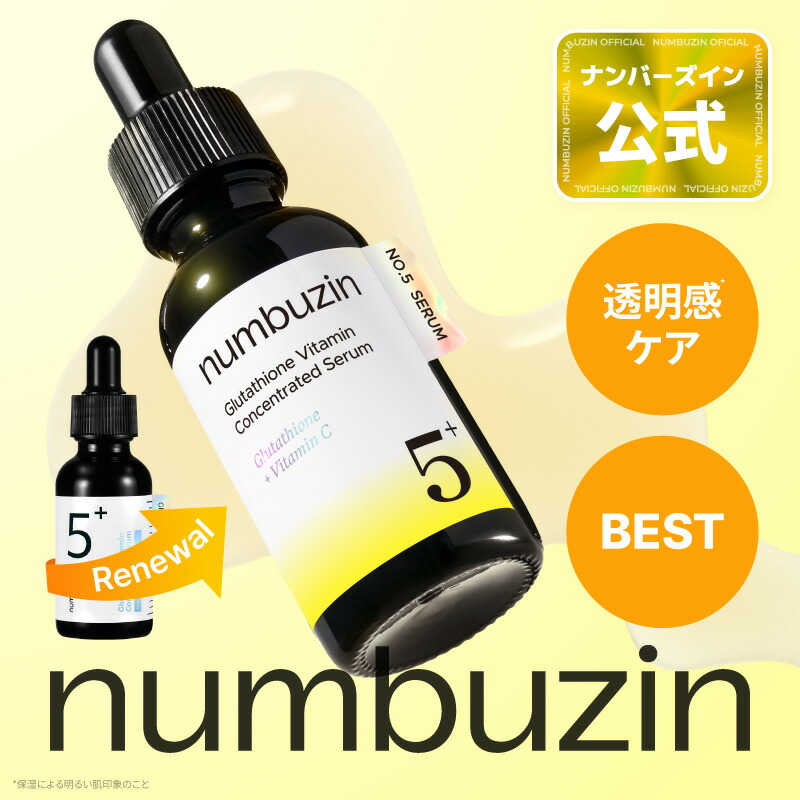
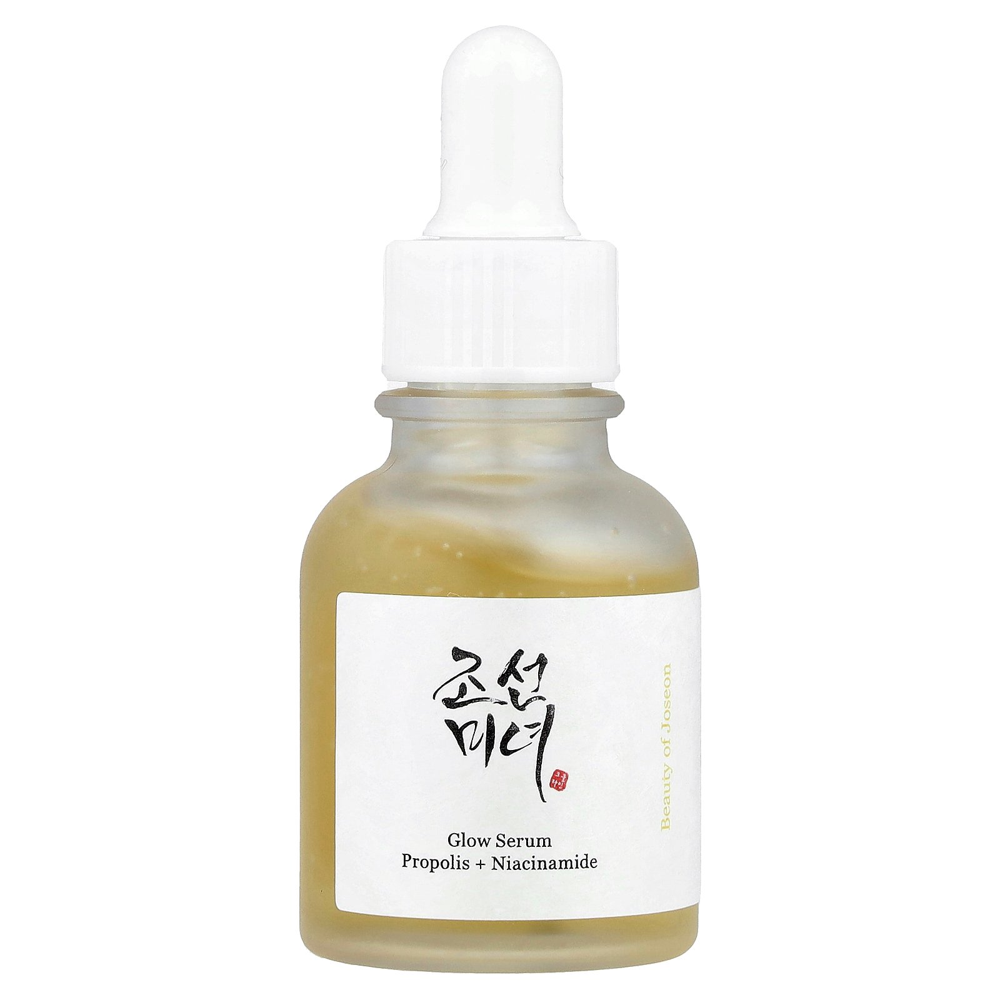
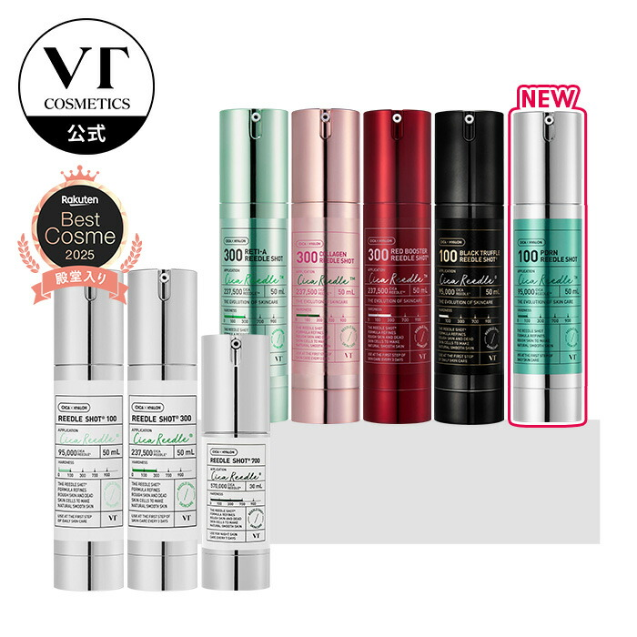

毛穴目立ち印象
皮脂や乾燥など、毛穴が気になる背景から候補を絞ります。
K-BEAUTY SERUM EDIT
高配合ナイアシンアミド、グルタチオン配合、プロポリス、導入美容液を目的別に比較。高濃度成分は少量から試します。

HOW TO CHOOSE
話題性ではなく、今いちばん気になる肌悩みから美容液を選びます。
皮脂や乾燥など、毛穴が気になる背景から候補を絞ります。
保湿成分や整肌成分を見て、毎日のケアに合う1本へ。
高配合だけで決めず、刺激感や併用を考えて少量から。
SKIN CONCERN
高配合や人気だけで決めると、今の肌悩みとずれることも。毛穴、乾燥、くすみ印象など、目的から候補を絞ります。
今の肌を知ることが、選び方の第一歩です。AFTER THE EDIT
成分濃度、使う順番、続けやすさを公式情報で比較。毎日のケアに心地よく取り入れられる1本へ。
今の肌に合う韓国美容液を、迷わず選ぶ。QUICK COMPARISON
| 商品 | 容量 | 参考価格 | タイプ | 選び方 |
|---|---|---|---|---|
| COSRX RX ザ・ナイアシンアミド15セラム | 20mL | 2,108円 | ナイアシンアミド15％ | 皮脂・キメを成分で選びたい |
| Anua ダークスポットセラム | 30mL | 販売ページで確認 | ナイアシンアミド＋TXA | 複数成分の組み合わせで選びたい |
| ナンバーズイン 5番 白玉グルタチオンC美容液 | 30mL | 2,618円 | グルタチオンC | 乾燥くすみとツヤを意識したい |
| Beauty of Joseon グロウセラム | 30mL | 販売ページで確認 | プロポリス＋ナイアシンアミド | 保湿感とツヤを重視したい |
| VT リードルショット100 | 50mL | 3,520円 | 導入美容液 | 洗顔後の導入ケアを試したい |
PRODUCT NOTES

ナイアシンアミド15％配合。高配合のため、肌の様子を見ながら少量から使います。

ナイアシンアミド、トラネキサム酸、アルブチンを配合した韓国化粧品です。

ナイアシンアミド、パンテノール、トラネキサム酸、グルタチオンなどを配合しています。

プロポリスエキスとナイアシンアミドを配合したグロウセラム。公式情報では毛穴印象と肌を整える目的です。

洗顔後、最初に使う導入美容液。特有の刺激感があるため、注意表示と使用頻度を確認します。